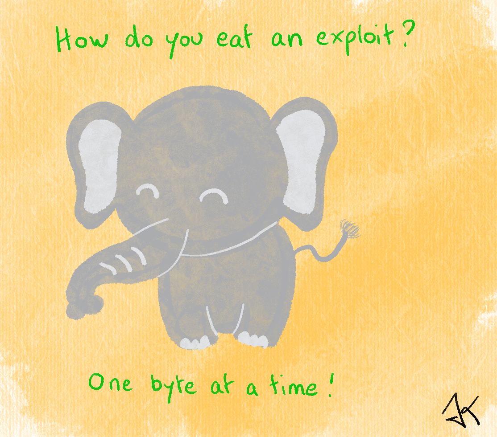

How Do I Do Research?
Much has been done in the research field about conducting research. This is a broad and diverse area of information science. The foundation of it is called scientific method and in simple words: it is the use of experimentation and observation to answer questions. What many people dismiss and are, in my opinion, the two most important points are:
- Defining the questions one wants to answer.
- Keeping expectations away from the analysis of results.
But before we get into that, we need some definitions.
Science
First and the most important, what is Science?
Science as a word comes from the Latin scientia, which means knowledge. Wikipedia defines it as
a systematic enterprise that builds and organizes knowledge in the form of testable explanations and predictions about the universe.
the Science Council as
Science is the pursuit and application of knowledge and understanding of the natural and social world following a systematic methodology based on evidence.
Darwin states in Volume 1 of The life and letter that
..science consists in grouping facts so that general laws or conclusions may be drawn from them.
and Michio Katu says in The future of the mind
Science, however, is never conducted as a popularity contest, but instead advances through testable, reproducible, and falsifiable theories.
All of them agree that Science is about knowledge and/or information, which can be tested and reproduced. It is a organized method of understanding the nature in which conclusions come after observation. Another point very important to remember: Science is never about absolutes, everything can be modified and changed, if new information and observation become available. I tend to say that this is the most beautiful part of Science.
Also one can never have complete knowledge of any subject, but we can aim to learn as much as we can through models, experiments and observations. And of course, this knowledge is valid until new information comes up, restarting the whole cycle.
With that in mind, we can go further to…
Scientific Knowledge
Scientific knowledge is the result of any scientific research. The quality of this knowledge strongly depends on how this knowledge have been gained. There are three basic forms of gaining knowledge:
- intuition: this includes creative ideas on how to build a process, solve a problem or even improve an existing process. One can visualize it as building something bigger by collecting various Lego boxes and building a whole new spaceship.
- empirical: the starting point of empirical knowledge is the experience. The senses - how something feels, smells, looks like - give us raw data about the world around us. That is the analyses part of the research. As Douglas Adams already put it in great words *”See first, think later, then test. But always see first. Otherwise you will only see what you were expecting. Most scientists forget that.”* I really recommend The Foundations of Empirical Knowledge by Herbert Dingle about the responsibilities of empirical research, if you are also interested by this aspect :)
- rational: this states that all beings think in terms of cause and effect and this process is how we organize our experiences and impressions of the world.
Scientific knowledge is not something immutable, on the contrary. Scientific knowledge is constantly evolving, disputable and cannot be compartmentalized.
The Scientific Method
The scientific method is a systematic way to approach research. You can apply this system to any kind of investigative process. So, how does it work?
There are three different schools or methods: the inductive method, the deductive method and the empirical falsification method.
Galileo, Bacon And The Inductive Method
This method is experiment based, which means: you get results and build conclusions based on this data. This is often also named from micro to macro because you get your end result by analyzing a set of different data points.
For example, if one gets a peanut package and get one nut out of it and it is a peanut. So one takes another nut and it is a peanut again, one repeats it some more times and keep getting peanuts. From the inductive method, one could conclude that all nuts are peanuts.
Descartes And The Deductive Method
This method is situation based, which means, you infer results and conclusions for a specific case, based on general data about similar situations. This is often known as from macro to micro because you infer that in this case something is like this, because it has been like this for all situations before.
For example, nuts are tasty and peanut is a nut. We deduct, peanuts are tasty.
Popper And The Empirical Falsification Method
The Popper method is of the most used scientific method. Popper was the most well-known philosopher of science in the XX century and mostly worked on separating science from not-science. His work is really impressive and I can only recommend reading it if you are into this kind of information science thingy like me.
He conjectures that a empirical theory cannot be proven, only falsified. So, if you want to prove something is right, you need to prove that there is no way that this is wrong, using reproducible experiments. He also states that a scientific statement needs to be precise and disprovable. His biggest contribution is that scientific statements are not immutable, they are simply hypothesis waiting to be disproved.
In this case, one would need to find all the nuts in the world and check, that all of them are peanuts. And finding one single walnut would be enough to falsify the first statement.
Technical Knowledge vs Scientific Knowledge
Technology is defined as applied science. Science in its purest form, whether experimental or theoretical, and the scientific knowledge is obtained simply for what it is. Put simply, Science is done because we can, while technical knowledge is connected to some economical gain and industrial development.
We can say that from the technology point of view, pure science is merely a mean to an end. In opposition to pure science which often lack consequences unless applied, the technical knowledge has the possibility to impact societies and communities by diffusing innovation and driving socio-economical changes in the societies and communities.
Scientific Value
Knowledge has scientific value and follows these principles, which are based on the scientific method scientists we discussed before:
- Verification principle: All scientific knowledge needs to be verifiable and verified. The researcher must be able to not only communicate the results but also allow others to verify that the results are correct.
- Falsifiability principle: A scientist must be prepared to have his research refuted at any time. No hypothesis is eternal in science.
Science is paradigm guided: the researcher’s work is to sew the discrete pieces of isolated knowledge into a general one using paradigms, which must be verifiable and disprovable.
Research
We can classify research by defining its goal, or by the kind of contributions it will bring to the community. In this matter, we have two classifications:
- Fundamental or elementary research, which is done without having an application goal determined. Oftentimes, this kind of research includes universal values and general truths.
- Applied research, which has the goal of collecting and generating knowledge for a specific issue or goal. It involves local interests and most of the times, it can be applied to a very specific problem or target.
But we can also classify our research using personal goals and skill level in the subject, as:
- exploratory, this is where every new subject starts. When you are learning a new topic, usually there are not much available information but you have that feeling it could become something big in the future. This kind of research is extremely tiring, since not much background information are available and it is all on you to find out. The question here is mostly what something is.
- descriptive research will, as the names hints, describe observations on some subject. It is mostly about reporting properties and features of any target or experiment. It often has the goal of answering how somethings happens.
- explanatory research is a bit more complex, since it is the standard for Master and PhD thesis. They have the goal of identifying the dependencies to a phenomena to occur. This kind of research deepens the target’s understanding, by not just describing how something works, but why. This kind of research is almost always based on previous exploratory and descriptive research.
How To Start A New Research Project?
First of all, ask a question that really bothers you. This is going to be the topic of your research and if you don’t have a deep interest in the subject, you are not going to keep motivated through the next months (or even years).
Avoid questions that are too open, like What is the meaning of life, universe and everything? and go for Given any separation of a plane into contiguous regions, is it possible to color each of the regions so that no two adjacent regions have the same color, using only 4 different colors? Remember that definitions are important also in the question statement (i.e. here), it is useful to define what adjacent regions means in your research.
Once you have the question, write it down in a clear way and make it available in a way that you can always refer and go back to it while working. It can be on a piece of paper on the wall behind your monitor or as a background image of your laptop (or even both!). This is important to keep your research on track and don’t lose yourself through the rabbit holes of the yet undiscovered ;)
Now that you have a question, spend some time in the beginning getting an overview of the topic and create a list of subjects to explore. Nothing is too basic or too deep at this point, just remember that there will be time to analyze all the subjects in depth, and your first goal is to build the outline! So do that! Create a draft outline. How the topics on the list are connected and how important they are for the final all mighty conclusion will be figured out on the way. This is only your research plan for now!
And we are here now: the research plan. Planning is very important. You need to find what works best for you, be it a post-it with a to-do list per day/week, be it setting milestones to be accomplished after a schedule. After deciding which one is your way to go, actually doing it and keeping it on time is very important. Set manageable goals for yourself!
Before starting the research itself, you need a system to organize your ideas, notes, data and resources. I used OneNote and a local git a lot for my “former” research topics, now I am using markdown files and git (git is in my system to stay I guess). Most importantly: find the system that works for you. Everyone works differently and what makes me successful and motivated may create a chaos for you. One more thing to keep in mind, make sure to keep track of quotations and notes connected with the sources. OneNote and most markdown editors have ways to add references to every line. You can also look for a software that does it for you like Citavi or JabRef.
Ok, now we are ready!
Get the first thing in your to-do list, or work towards your first milestone! You don’t need to have everything figured out on your first, second or even third draft. Remember:

[^]: drawing by kylma
Celebrate every - even if it is a small one - achievement. It helps with the motivation. Ask for help, if you feel stuck. Go deeper in your understanding of the materials from your own resources and references.
Curiosity: the world project comes from Latin pro-jicere and it means push forward :)
The research-ing loop
This is the while(True) from the researching process, as long as you have topics, subjects and sub-questions to work towards your goal.
- Observe and read as much as you can about the subject matter
- Define an hypothesis based on your observations
- Make some predictions using your hypotheses for similar cases
- Test your predictions as long as they diverge from your observations, changing and adapting your predictions accordingly
- Build your theory as set of predictions which work for your observations
Inside this loop, you will build your theoretical basis about the subject - remember all that reading? - and create the reference’s list for your final report. You also can start writing all the abbreviations you use and define all the terms which are somewhat clear but not precisely. You can also adapt some definitions accordingly to the scope of your research.
The Abstract And The Conclusion
When you are finally out of the researching loop, you will probably be missing only the abstract and the conclusion of your research paper. Sadly, they are the most important parts of it, since they are the sections that people will read before starting looking into your actual work.
In the abstract, you should add your question and explain the issue you are trying to solve. You should also add the basic concepts and definitions and most important, your methodology. It is also very nice to have 2-4 sentences explaining why your research is important and it is always a bonus if you can contextualize it with a good social-economical impact :) Keep the sentences short and direct, selecting only the most important aspects of your work.
On the conclusion, list and describe the results and explain how the results answer your question.
Tips
My research plan
I have a one sided sheet, where I condense all the information I need to keep track of my research. It looks like this:
| Question | Value | |
|---|---|---|
| Subject | What? | your research title, which shouldn’t change much during the whole period, but it can! - this is NOT your question! |
| Objective | What for? | your goals, what are you going to improve, prove, check, impact, change - they are always active verbs for a reason |
| Justification | Why? | think about why someone would like to pay (yes, real money!) you to do it, why is research important? relevant? innovative? |
| Model | Explain. | Describe the issue, your question, in details here |
| Method | How? | add your method, environments, techniques, etc |
| Scope | Which cases? | Write down what you are NOT planning to do, which things are out-of-scope, which can be future research, etc |
| Timeline | When? | Add that nice outline with your milestones here! |
Conclusion
Any topic of interest can be turned into research. There are papers on the dynamics of spilling coffee while walking down a corridor and how eating pizza can prevent cancer, so whatever your idea is, I am sure you are good :)
If you are interested in more funny research papers for the breaks, improbable research has a list of the best ones!
this has been written by me for fun purposes, don't take it serious!